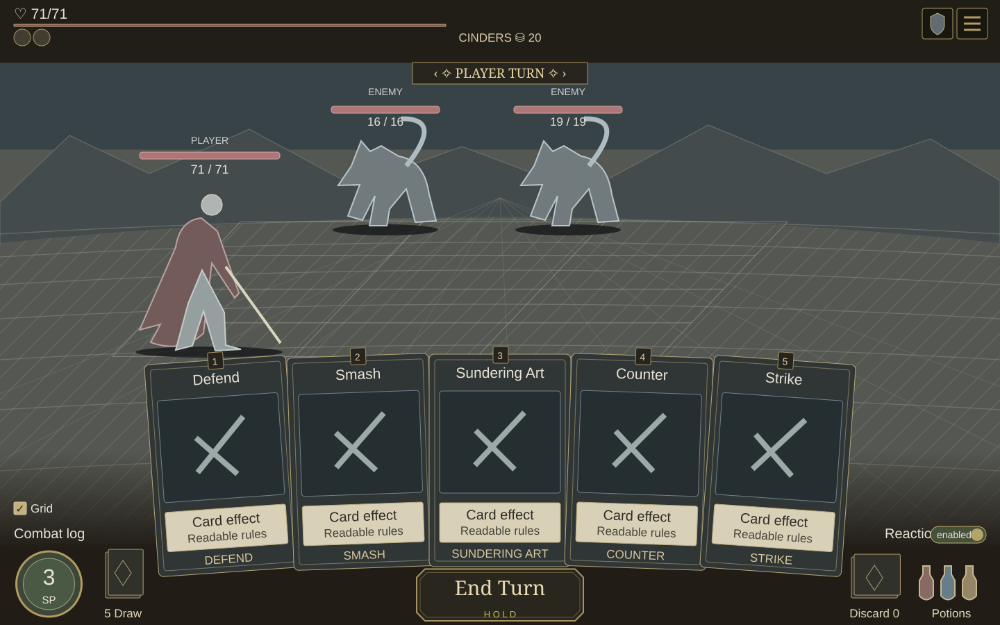
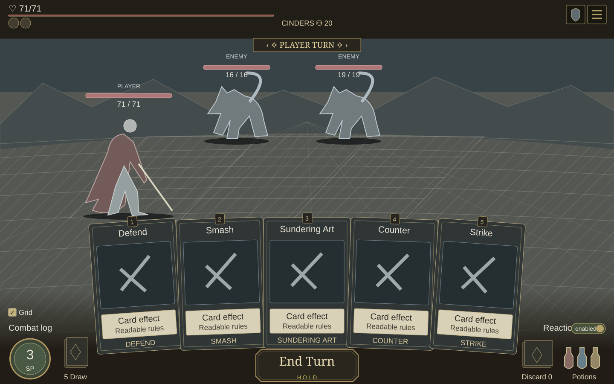
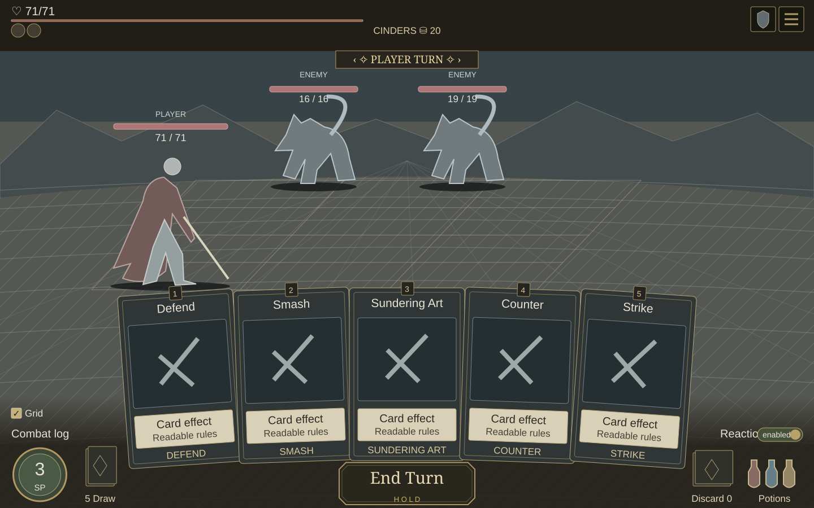

A · Short fade
48px fade · y742→790 · base 100%
Most open floor above the controls; a short 48px transition.
Only the dark background changes: its height, fade and opacity. All card and control positions stay fixed.
B is suggested. The floor continues to the bottom behind the cards; the fade brings contrast back for the footer.
Select a preference below. Selection is local to this review.
48px fade · y742→790 · base 100%
Most open floor above the controls; a short 48px transition.
90px fade · y700→790 · base 100%
90px transition into a solid footer, leaving the upper cards over the floor.
140px fade · y650→790 · base 100%

A gentler 140px transition; the darkening starts higher behind the card bottoms.
90px fade · y730→820 · base 100%
90px transition with the solid footer beginning lower, at y820.
140px fade · y680→820 · base 100%

140px transition into the lower y820 base; more gradual across the controls.
90px fade · y700→790 · base 85%

Same 90px fade as B, with an 85% dark base so floor texture remains visible.
90px fade · y700→790 · base 100%

90px non-linear fade: 0 → 12 → 45 → 100%, with a softer upper edge.
Desktop-only design review. No runtime changes. Choose one for approval before implementation.